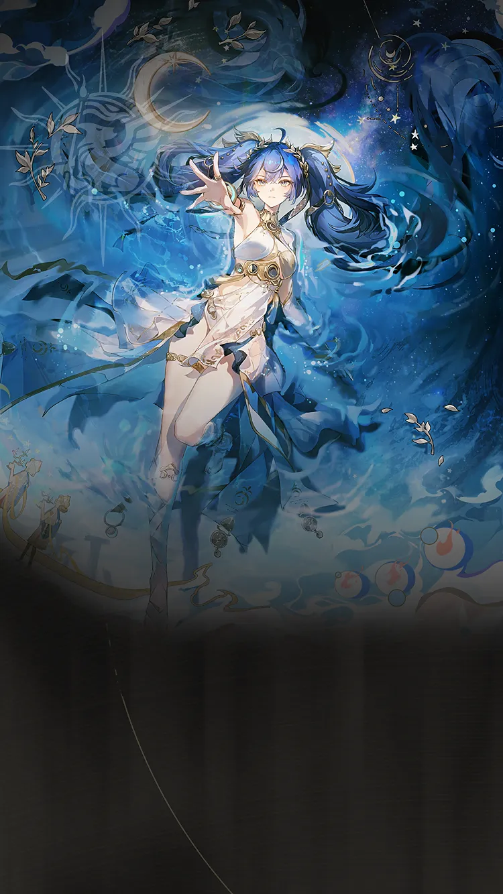

Wuthering Waves Resonator guide
Iuno build, teams, weapons, and Echoes
Flexible Aero hybrid who can support Augusta or lead a hypercarry team.
Personal notes
Optional profile-aware info that keeps the main guide unchanged.
No profile connected on this browser yet.
Log in above to load an existing WaveKit profile, or use the team helper to mark your Resonators and weapons for Iuno.
Skill priority
Team compositions
 Main damageIunoLeads the damage plan
Main damageIunoLeads the damage plan Setup helperLynaeSets up the damage dealer
Setup helperLynaeSets up the damage dealer Support slotMornyeCompletes the team
Support slotMornyeCompletes the teamLynae handles the main setup while Mornye completes the team. Iuno can lead her own team. Lynae plus Mornye is the premium hypercarry core; Ciaccona, Yinlin, and Jianxin are documented alternatives, while Aero Rover is the free-form utility route.
Main damageIunoLeads the damage planSetup helperLynaeSets up the damage dealer Support slotShorekeeperCompletes the team
Support slotShorekeeperCompletes the teamLynae handles the main setup while Shorekeeper completes the team. Iuno can lead her own team. Lynae plus Mornye is the premium hypercarry core; Ciaccona, Yinlin, and Jianxin are documented alternatives, while Aero Rover is the free-form utility route.
 Main damageAugustaLeads the damage planSetup helperIunoSets up the damage dealerSupport slotShorekeeperCompletes the team
Main damageAugustaLeads the damage planSetup helperIunoSets up the damage dealerSupport slotShorekeeperCompletes the teamIuno supports Augusta alongside Shorekeeper. Augusta wants Heavy Attack or universal amplification before generic Electro pairing. Iuno is her strongest focused helper; Mortefi and Rebecca are strong Heavy Attack options. Lynae works especially well with Mornye, while Mornye should only enter Augusta teams beside Lynae or Rebecca. Phrolova is excluded because Augusta's second Ultimate field removes Hecate.
More reviewed options are grouped by playstyle. Keep partners inside the matching route.


Do not mix specialist partners across playstyles. Start with a complete team above, then replace only the matching role.
New player reading guide
If you are only checking Iuno before building a profile, start by confirming their role, weapon type, Sonata, and whether they need a real healer or a specific helper.
Iuno guide overview
Iuno is an Aero Main DPS and hybrid in Wuthering Waves. Its recommended build starts with Moongazer's Sigil, while its Echo plan uses Crown of Valor, Sierra Gale. The guide also covers stat priorities, compatible teammates, and a practical rotation.
Quick build
- Role
- Main DPS / Hybrid
- Team type
- Utility, Heavy
- Best weapon
- Moongazer's Sigil
- Alternate weapons
- Verity's Handle / Blazing Justice / Legend of Drunken Hero
- Sonata
- Crown of Valor, Sierra Gale
- Echo cost
- 4-3-3-1-1
- Main Echo
- Lady of the Sea
- Main stats
- Crit DMG or CRIT Rate / Aero DMG / ATK%
Stat priority
- Priority 1: Energy Regen until satisfied
- Priority 2: CRIT Rate and CRIT DMG
- Priority 3: Resonance Liberation DMG Bonus
- Priority 4: ATK%
Resonance Chain overview
Each Resonance Chain level comes from duplicate copies of this Resonator. Expand a level for the exact in-game effect and use the short line for a quick read.
Playstyles and modes
Main DPS
Iuno takes the central field-time role. Lynae and Mornye form her premium hypercarry route.
Hybrid support
Iuno supports another carry while contributing meaningful damage. Augusta is the clearest established partner.
Chain effects
R1Wax or Wane, All Gild the BoughWhen Iuno is in Lunar Cycle, her ATK is increased by 40%.…+
When Iuno is in Lunar Cycle, her ATK is increased by 40%.
When Iuno is inside the Full Moon Domain, she additionally restores 1 point of Resonance Energy per second.
Resonance Skill - Arc Beyond the Edge and Heavy Attack - Absolute Fullness become immune to interruption.
R2Day or Night, Let This Be EternalResonators in the team with 10 stacks of Blessing of the Wan Light gain an additional 40% all DMG Amplification.+
Resonators in the team with 10 stacks of Blessing of the Wan Light gain an additional 40% all DMG Amplification.
R3I Drink Deep of Their ForgettingWhen Iuno is in Lunar Cycle, DMG dealt by Moonbow - Basic Attack, Resonance Skill - Arc Beyond the Edge, and Moonbow - Dodge Counter is Amplified by 65%.…+
When Iuno is in Lunar Cycle, DMG dealt by Moonbow - Basic Attack, Resonance Skill - Arc Beyond the Edge, and Moonbow - Dodge Counter is Amplified by 65%.
Within a certain period after performing Moonbow - Basic Attack or Moonbow - Dodge Counter, casting Resonance Skill - Arc Beyond the Edge does not reset the cycle of Moonbow - Basic Attack.
R4Rainy Season Dwell in My EyesCasting Heavy Attack - Absolute Fullness grants a Shield equal to 160% of Iuno's ATK to all Resonators in the team for 30s, which cannot be passed on to the incoming Resonator.+
Casting Heavy Attack - Absolute Fullness grants a Shield equal to 160% of Iuno's ATK to all Resonators in the team for 30s, which cannot be passed on to the incoming Resonator.
R5A Thousand Futile GlimpsesIuno gains 20% Resonance Liberation DMG Bonus.+
Iuno gains 20% Resonance Liberation DMG Bonus.
R6I Am the Constant in the ChaosThe DMG Multiplier of Heavy Attack - Absolute Fullness is increased by 1600%.…+
The DMG Multiplier of Heavy Attack - Absolute Fullness is increased by 1600%. Upon casting this skill, Iuno re-enters Lunar Cycle - New Moon, gains 100 points of Sentience, and resets all the cooldown of Resonance Skill - Arc Beyond the Edge.
Effect names, numbers, and conditions follow current public game-data records. WaveKit keeps the full wording available so important conditions are not lost in a tier label.
Simple play pattern
- Use Iuno as a setup piece: apply their buff, effect, or off-field pressure first.
- Swap back to the carry once their useful window is active.
- If their setup feels late, add Energy Regen before chasing more damage.
Build priority
- Difficulty
- Flexible
- Safety
- Utility support
- Data note
- Guide checked
Iuno is most valuable when their buff, element, or mechanic matches the carry you want to build.
Iuno FAQ
What is the best Iuno build in Wuthering Waves?
Iuno's recommended WaveKit setup supports both Aero Main DPS and hybrid play, using Moongazer's Sigil, Crown of Valor, Sierra Gale, and Lady of the Sea as the main Echo target.
What stats should Iuno use?
Start with Crit DMG or CRIT Rate / Aero DMG / ATK%. If the rotation feels uncomfortable, improve Energy Regen or defensive comfort before chasing perfect substats.
What teams work with Iuno?
Iuno / Lynae / Mornye is the premium hypercarry team. Iuno can also use Ciaccona with Aero Rover or Shorekeeper, Yinlin with Shorekeeper, or Jianxin with Verina.
Is Iuno beginner friendly?
Iuno's current difficulty is listed as Flexible. If you are learning, pair them with safer sustain or defensive support.